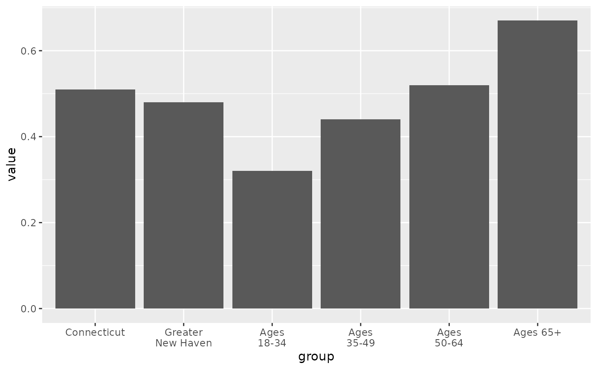
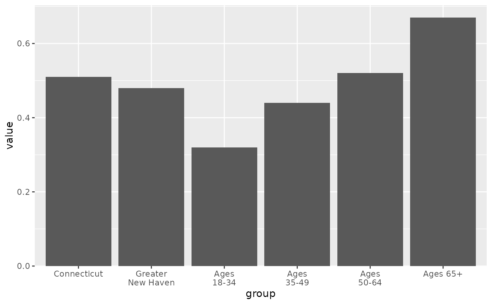

Set a continuous scale more suited to bar charts
Source:R/scale_barcontinuous.R
scale_barcontinuous.RdThis is a light wrapper around ggplot2::scale_x_continuous / ggplot2::scale_y_continuous that sets an expand argument of mult = c(0, 0.05). The purpose of this is just to align the bases of bars with the x-axis (for scale_y_continuous) or y-axis (for scale_x_continuous), rather than the default that leaves a gap between bars and the x- or y-axis.
Examples
library(ggplot2)
local_govt <- cws_trend |>
dplyr::filter(year == 2024, question == "local_govt_responsive")
# default expansion leaves an awkward gap below 0-aligned bars
p <- ggplot(local_govt, aes(x = group, y = value)) +
geom_col() +
scale_x_discrete(labels = scales::label_wrap(10))
p

# scale_y_barcontinuous changes expansion to remove it
p +
scale_y_barcontinuous()
